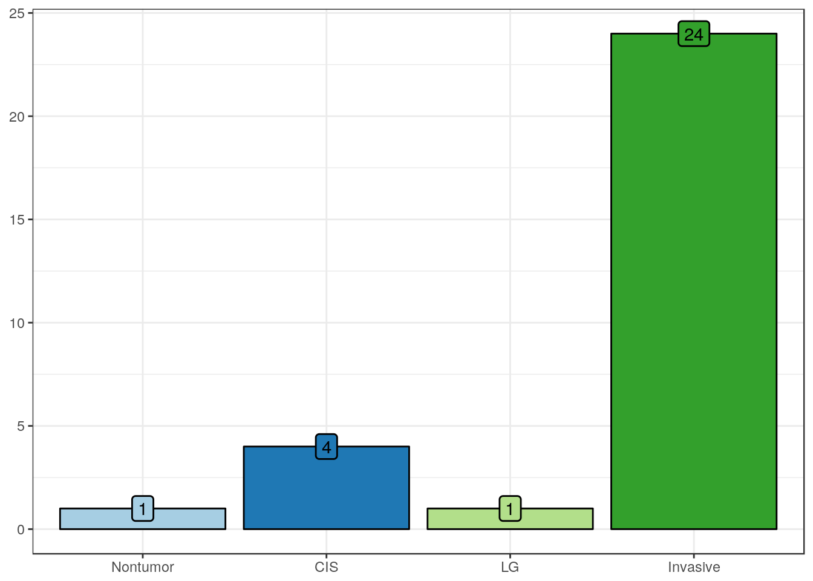
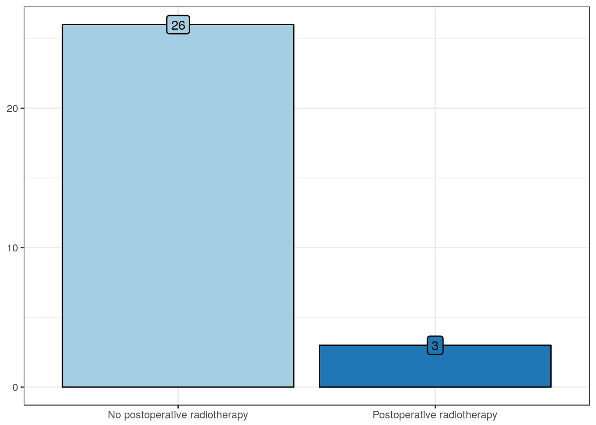
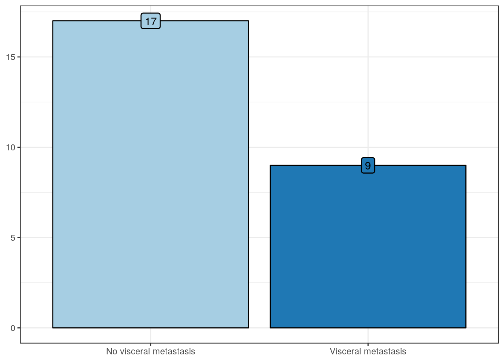

Â
Clinicopathologic and outcome features
Clinical features
Age
| Values | |
|---|---|
| Mean | 64.3 |
| Standard deviation | 12.3 |
| Median | 66.5 |
| Interquartile range | 17.2 |
| Mininum | 35 |
| Maximum | 89 |
Sex
| No. Cases (%) | |
|---|---|
| Female | 7 (23) |
| Male | 23 (77) |
Race
| No. Cases (%) | |
|---|---|
| African American | 4 (13) |
| Caucasian | 26 (87) |
Pathologic features
Diagnosis

| No. Cases (%) | |
|---|---|
| Nontumor | 1 (3) |
| CIS | 4 (13) |
| LG | 1 (3) |
| Invasive | 24 (80) |
pT stage
| No. Cases (%) | |
|---|---|
| pTa/Tis | 6 (20) |
| pT1 | 4 (13) |
| pT2 | 8 (27) |
| pT3 | 9 (30) |
| pT4 | 3 (10) |
Clinical stage
| No. Cases (%) | |
|---|---|
| 0 | 6 (20) |
| I | 4 (13) |
| II | 4 (13) |
| III | 8 (27) |
| IV | 8 (27) |
Histologic grade
| No. Cases (%) | |
|---|---|
| Low grade | 0 (0) |
| High grade | 30 (100) |
CIS
| No. Cases (%) | |
|---|---|
| No CIS | 16 (53) |
| CIS | 14 (47) |
Lymphovascular invasion

| No. Cases (%) | |
|---|---|
| No lymphovascular invasion | 22 (73) |
| Lymphovascular invasion | 8 (27) |
Lymph node metastasis
| No. Cases (%) | |
|---|---|
| Negative lymph nodes | 21 (78) |
| Positive lymph nodes | 6 (22) |
Preoperative features
Preop CIS
| No. Cases (%) | |
|---|---|
| No CIS | 13 (45) |
| Presence of CIS | 16 (55) |
Preop procedure

| No. Cases (%) | |
|---|---|
| Biopsy | 17 (59) |
| TURBT | 12 (41) |
Preop stage
| No. Cases (%) | |
|---|---|
| pTa/Tis | 6 (21) |
| pT1 | 4 (14) |
| pT2 | 13 (45) |
| pT3 | 5 (17) |
| pT4 | 1 (3) |
Treatment features
Preop RTx
| No. Cases (%) | |
|---|---|
| No preoperative radiotherapy | 29 (100) |
| Preoperative radiotherapy | 0 (0) |
Preop CTx
| No. Cases (%) | |
|---|---|
| No preoperative chemotherapy | 28 (97) |
| Preoperative chemotherapy | 1 (3) |
Intravesical CTx
| No. Cases (%) | |
|---|---|
| No intravesical chemotherapy | 15 (54) |
| Intravesical chemotherapy | 13 (46) |
Intravesical CTx type
| No. Cases (%) | |
|---|---|
| BCG | 13 (100) |
| Mitomycin | 0 (0) |
Postop RTx

| No. Cases (%) | |
|---|---|
| No postoperative radiotherapy | 26 (90) |
| Postoperative radiotherapy | 3 (10) |
Postop CTx
| No. Cases (%) | |
|---|---|
| No postoperative chemotherapy | 14 (48) |
| Postoperative chemotherapy | 15 (52) |
Postop CTx type
| No. Cases (%) | |
|---|---|
| Adjuvant chemotherapy | 12 (86) |
| Salvage chemotherapy | 2 (14) |
Outcome features
Follow-up, in months
| Values | |
|---|---|
| Mean | 62.3 |
| Standard deviation | 54.7 |
| Median | 40.5 |
| Interquartile range | 63.9 |
| Mininum | 4.1 |
| Maximum | 215 |
Tumor progression
| No. Cases (%) | |
|---|---|
| No tumor progression | 10 (43) |
| Tumor progression | 13 (57) |
Visceral metastasis

| No. Cases (%) | |
|---|---|
| No visceral metastasis | 17 (65) |
| Visceral metastasis | 9 (35) |
Overall mortality
| No. Cases (%) | |
|---|---|
| AWD + ANOD | 5 (17) |
| DOD + DOC | 25 (83) |